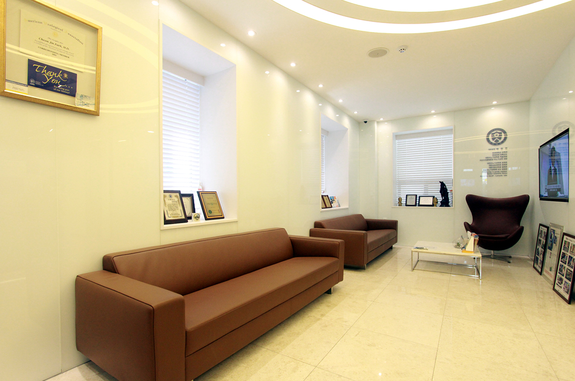

01 / PRIVACY
독립된 5개의 개인진료실
다른 환자와 마주치는 불편함 없이 독립된 공간에서 충분한 시간 동안 상담과 진료가 이루어집니다.

1999년부터 직접 의료상담과 수술을 이어온 강남J비뇨기과는 독립된 5개의 개인진료실과 남자 전담 의료·상담팀으로 환자 한 분 한 분의 비밀 보장과 편안한 진료를 약속합니다.

Safe · Simple · Speed의 3S 원칙과 무통·무출혈·무합병증(No3) 지향으로 HoLEP 전립선비대증 수술부터 Combi-Operation까지 정밀하게 집도합니다.

원인과 증상 분석부터 정밀 진단, 맞춤 치료까지 원스톱으로 연결하여 불필요한 대기 없이 빠른 일상 복귀를 돕습니다.
강남J 진료 가이드에서 원하는 시술과 상세 페이지로 바로 이동하세요
Safe · Simple · Speed | No pain · No bleeding · No complication
1999년부터 축적된 남성의학·비뇨기과 임상 경험을 바탕으로 각 질환별 상세 진료 페이지에서 원인과 치료법을 확인하실 수 있습니다.
소변 내 무기질·유기물 결합으로 생기는 요로결석의 원인 분석, 정밀 진단 및 신속한 치료 프로세스를 제공합니다.
전립선비대증(HoLEP·유로리프트)부터 전립선염, 전립선암, 전립선통까지 단계별 맞춤 진단과 수술적 치료를 시행합니다.

발기부전과 전립선비대증을 동시에 고려한 Combi-Operation(3-Piece + HoLEP) 등 정교한 수술 노하우를 보유하고 있습니다.
귀두확대, 음경굵기확대, 길이연장술, 음경이물질제거, 음경만곡증 및 함몰음경 교정을 3S 원칙으로 진행합니다.

조루증의 원인·진단·치료와 발기부전 정밀 성기능검사를 통해 심리적·기질적 원인을 함께 해결합니다.

흉터와 출혈 부담을 줄인 무도정관수술, 미세정관복원수술, 레이저포경수술을 국소 신경 마취로 안전하게 시행합니다.
병은 소문을 내라고 했지만, 누구에게나 쉽게 털어놓기 어려운 고민이 있습니다. 강남J비뇨기과는 철저한 프라이버시와 수술 안전 시스템으로 답합니다.
예약 · 수술 상담하기 →다른 환자와 마주치는 불편함 없이 독립된 공간에서 충분한 시간 동안 상담과 진료가 이루어집니다.
모든 시술과 검사에 의사와 남자 간호사만 참여하며, 비뇨기과 경력의 남자 상담원이 세심하게 안내합니다.
전신 마취 독성을 최소화하고 첨단 활력증후 모니터링 기계로 맥박·산소포화도·혈압을 실시간 확인합니다.
수술에 대한 막연한 불안감을 낮추기 위해 환자가 편안해하는 음악을 청취하는 IntraOperative Music을 적용합니다.

원장이 직접 설계·고안한 첨단 수술기구와 자외선 소독기기, 2개의 수술방으로 불필요한 dead time을 줄입니다.

개인정보 보호를 위한 전자차트 시스템과 2개의 접수창구, 건물 내 충분한 지하 주차 공간을 갖추고 있습니다.
환자가 정말로 원하는 정확한 정보와 치밀한 수술 계획으로 회복기간 단축과 합병증 감소를 실현합니다.
원장이 직접 상담하고 모든 검사·수술을 집도하며, 원내에서 직접 전문 교육시킨 베테랑 정식 간호사팀과 함께합니다.
1999년 6월부터 하루도 빠지지 않고 직접 의료상담을 이어오며 환자가 원하는 정확한 의학 정보를 축적해 왔습니다.
수술 전 충분한 상담으로 치밀하게 착안하고, 군더더기 없는 간결하고 빠른 수술로 합병증 가능성을 낮춥니다.
최소한의 국소 신경 마취와 독자적 수술 기구 운용으로 통증·출혈·합병증 부담을 줄이는 데 집중합니다.
5개의 독립 개인진료실과 2개의 접수창구, 2개의 수술방을 분리 운영해 프라이버시 침해 없는 진료를 제공합니다.
강남J비뇨기과에서 최소 2년 이상 근무하며 원장이 직접 전문 교육시킨 베테랑 정식 간호사 출신 3명이 수술팀백을 이룹니다.
국내외 학회 활동과 연구를 통해 변화하는 최신 비뇨기과 정보를 신속하게 진료에 적용하는 전문 의료진입니다.

1999년부터 직접 의료상담과 수술을 집도해 온 강남J비뇨기과 대표원장으로, 3S·No3 수술 원칙과 선진 의학 기술 연구에 매진하고 있습니다.

세브란스(연세의대 비뇨의학교실) 교수 출신으로, 풍부한 임상·학술 경험을 바탕으로 정밀 비뇨기 진료를 함께합니다.
강남J비뇨기과의 원내 시설, 학술·언론 활동, 자주 묻는 질문을 한눈에 살펴보세요.
# 프라이버시_독립진료병원을 찾기 전, 현재 내 증상이 어떤 비뇨기 질환과 관련이 있는지 간단한 체크리스트로 확인해 보세요.
밤에 소변 때문에 자주 깨고, 소변 줄기가 가늘거나 잔뇨감이 느껴지시나요?
갑작스러운 옆구리·하복부 통증이나 혈뇨, 배뇨통이 나타나시나요?
회음부·고환의 묵직한 불편감과 빈뇨·배뇨 시 찌릿한 통증이 지속되시나요?
성관계 시 강직도가 부족하거나 유지가 어려워 고민이신가요?
원하는 시간보다 빠르게 사정이 이루어져 스스로 조절이 어렵다고 느끼시나요?
박천진 원장이 직접 설명하는 질환별 핵심 의학 정보와 수술 안내 영상
혼자서 고민하거나 부끄러워하지 마세요. 대표전화 또는 간편 상담을 남겨주시면 진료시간 외 접수 건도 순차적으로 친절히 안내해 드립니다.
지하철 7호선 학동역 8번, 9번 출구 사이 (건물 내 지하 주차장 이용 가능)
※ 가급적 02-3018-7575로 사전 예약 및 예약 확인 후 내원 부탁드립니다.